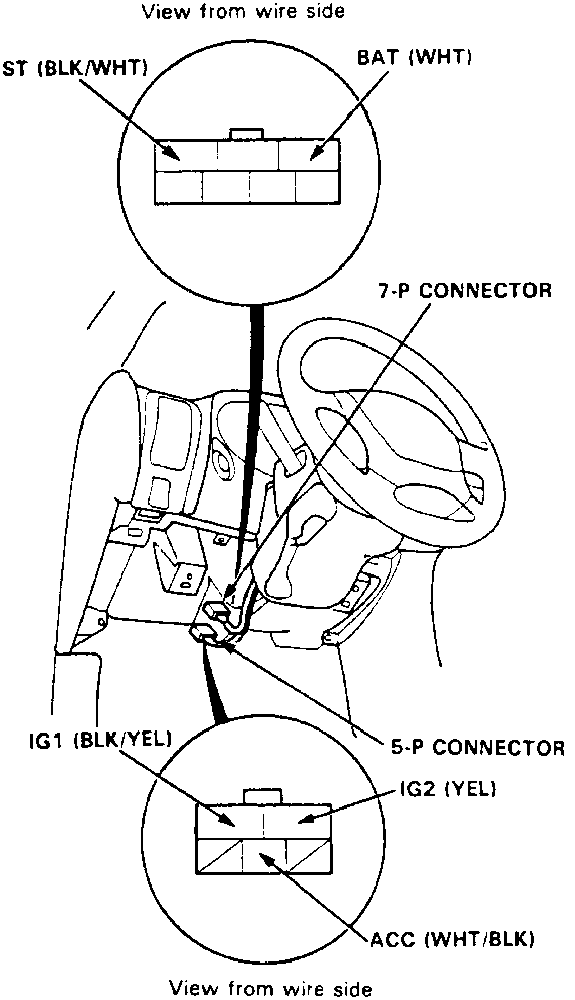

Ignition Lock: Service and Repair
On models equipped with airbag system, refer to Technician Safety Information for system disarming and arming procedures.Fig. 2 Ignition Switch & Steering Lock Connectors:

1. On models equipped with radio coded theft protection system, refer to Vehicle Damage Warnings for system disarming and arming procedures.
2. Remove instrument panel lower cover and knee bolster from instrument panel.
3. Disconnect five pin connector from under dash fuse/relay panel and seven pin connector from main harness, Fig. 2.
4. Remove steering column upper and lower covers.
5. Remove steering column support bracket mounting bolts and nuts.
6. Lower steering column.
7. Center punch two steering lock shear bolts, then using a 3/16 drill bit, drill heads off shear bolts.
8. Remove shear bolts from switch body.
9. Reverse procedure to install, noting the following:
a. Install new switch without ignition key inserted, then loosely tighten new shear bolts.
b. Insert ignition key and check for proper operation of steering wheel lock and that ignition key turns freely.
c. Tighten shear bolts until hex heads twist off.
10. On models equipped with radio coded theft protection system, refer to Vehicle Damage Warnings for system disarming and arming procedures.
11. On models equipped with airbag system, refer to Technician Safety Information for system disarming and arming procedures.